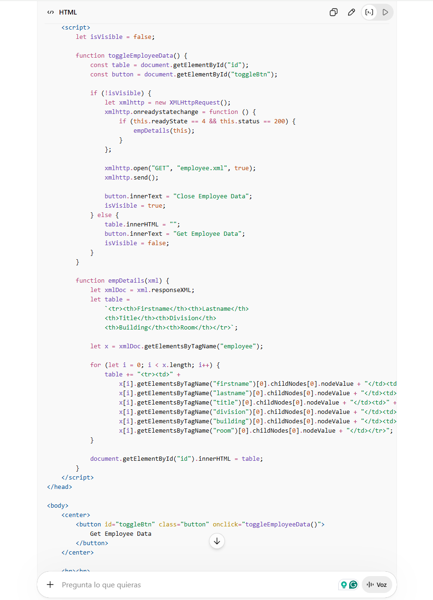

I asked the AI to generate a toggle option for this table.
The button text updates based on its state: "Get Employee Data" when the table is hidden, and "Close Employee Data" when the table is visible.
Additionally, the AI suggested improving performance by ensuring the XML file is loaded only once instead of reloading each time the button is clicked.
I added 6 additional entries starting with row name: "Laura". I also added some CSS in a separate sheet and link it into my HTML head.
Couple observation I notice is that The AI change the button onclick="loadXMLDoc()" to onclick="toggleTable()"
